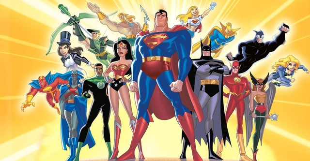

Impacto da DC
Impactos da DC na cultura pop
Mesmo com os autos e baixos enfrentados na última década, é inegável o tamanho do legado da DC Comics. Em seus primórdios iniciais, após o sucesso de Superman e suas continuações, era mais que esperado que o Batman ganhasse sua própria adaptação ao cinema, e foi ao fim dos anos 80 que o excêntrico Tim Burton apresentou o morcego de Gotham de maneira única com Batman e sua continuação Batman o Retorno.
Ainda que o nome DC esteja em baixa devido aos filmes de 2023 que não alcançaram o esperado, e a incerteza do futuro a ser comandado por James Gunn, a iniciar-se em 2025 com o vindouro Superman – Legacy a ser protagonizado por David Corenswet, é inegável o legado que a marca DC possui na cultura pop e o tamanho e quantidade que a editora possui e ainda pode ganhar as telas do cinema.
Melhores quadrinhos da DC
- Batman – A Piada Mortal
- Reino do Amanhã
- Grandes Astros: Superman
- Sandman
- Super-girl mulher do amanhã
Liga da Justiça Sem Limites (no original em inglês: Justice League Unlimited) é uma série de desenho animado estadunidense, produção conjunta da Warner Bros. e da DC Comics, e sucedeu ao desenho Liga da Justiça. É a série animada em que aparece a maior diversidade de personagens da DC Comics, e até membros obscuros como Vigilante e Gavião Negro fazem suas primeiras aparições fora dos quadrinhos. Liga da Justiça sem Limites fez sua estreia no dia 31 de julho de 2004 no Cartoon Network norte-americano. No dia 2 de abril de 2005 no Cartoon Network do Brasil. Na TV aberta, estreou no dia 3 de outubro de 2005 no SBT no programa Bom Dia & Companhia sendo exibido até o dia 30 de março de 2018 através de reprises
